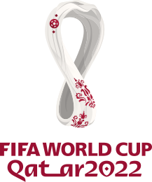

<mat-sidenav-container fullscreen>

  <mat-sidenav #sidenav mode="push">
    <mat-toolbar color="basic" class="mat-toolbar-nav">
      
      <span class="spacer"></span>
      <button mat-icon-button (click)="sidenav.toggle()">
        <mat-icon>close</mat-icon>
      </button>
    </mat-toolbar>

    <mat-nav-list>
      <a mat-list-item (click)="sidenav.toggle()" (click)="team()">
        <mat-icon matListItemIcon>flag</mat-icon>
        <samp>Equipos</samp>
      </a>

      <a mat-list-item (click)="sidenav.toggle()" (click)="player()">
        <mat-icon matListItemIcon>groups</mat-icon>
        <samp>Jugadores</samp>
      </a>

      <a mat-list-item (click)="sidenav.toggle()" (click)="group()">
        <mat-icon matListItemIcon>workspaces</mat-icon>
        <samp>Grupos</samp>
      </a>
    </mat-nav-list>

  </mat-sidenav>

  <mat-sidenav-content>
    <mat-toolbar color="basic" class="mat-toolbar-bar">
      <button mat-icon-button (click)="sidenav.toggle()">
        <mat-icon>menu</mat-icon>
      </button>
      <span class="spacer"></span>
      
    </mat-toolbar>

    <router-outlet></router-outlet>
  </mat-sidenav-content>

</mat-sidenav-container>
